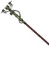
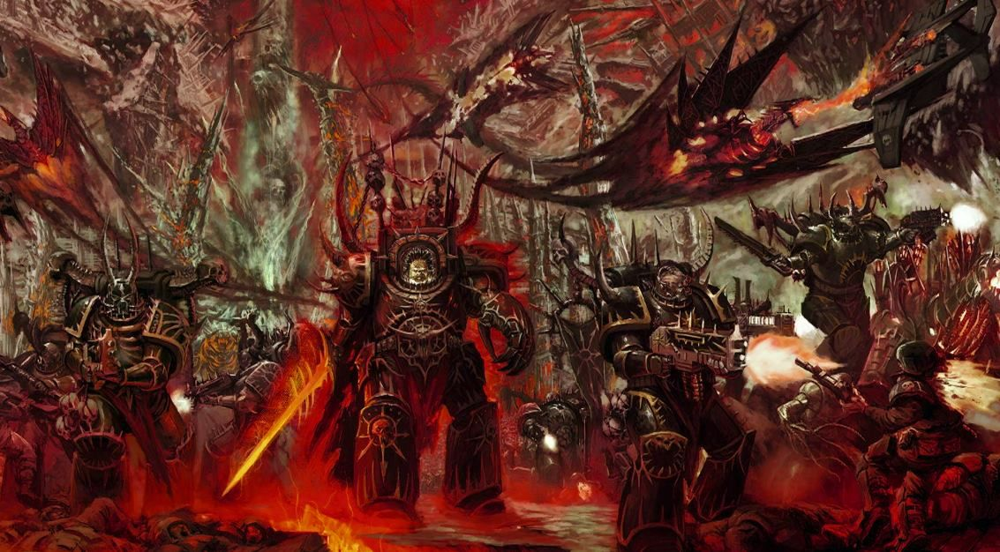
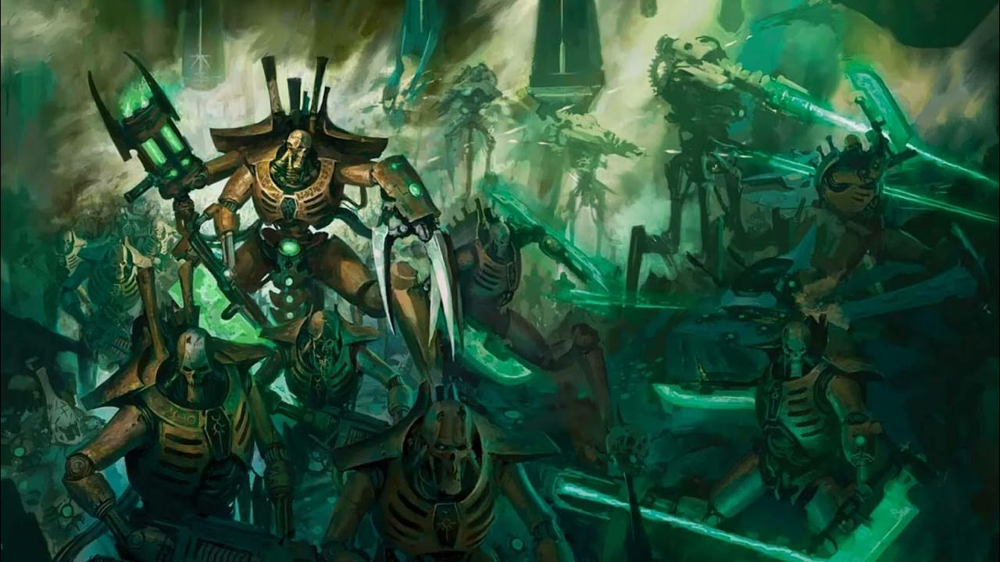
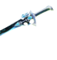

Дух
Не будет атаковать 3 минуты после благовонья, увеличивает активность, если в его комнате кто-то есть.


Мираж
Единственный призрак, которому свойственен полёт, может проходить сквозь стены, но боится соли.

Фантом
Заставляет игроков терять рассудок, если они смотрят прямо на него, никогда не уходит от своей комнаты слишком далеко.

Полтергейст
Может кидать за раз много предметов, не выносит нахождение в пустой комнате.

Джин
Не может выключить счётчик, если счётчик включён, может атакой отнять много рассудка, ускоряет скорость погони при визуальном контакте.

Мара
Атака, когда рассудок выше 50, любит ломать лампочки, никогда не включает свет.

Ревенант
Ускоряет скорость погони при визуальном контакте, очень медленный, если не видит жертву.
Тень
Атака, когда рассудок меньше 35, менее активен, если рядом много людей.
Ёкай
Слышит не дальше 2,5 м от себя, становится агрессивнее, если в его комнате кто-то говорит.
Ханту
Быстрый, когда холодно, при охоте выпускает пар изо рта, быстрый в своей комнате, а в других нет.
Горё
Увидеть силуэт через лазерный проектор можно только через камеру, не отходит далеко от своей комнаты.
Мюлинг
Очень часто говорит в направленный микрофон, шаги слышны не дальше 12 метров.
Онрё
Атака, когда рассудок выше 50, задует 3 свечи и сразу начнёт охоту.
Близнецы
Активничают с окружением по очереди с интервалом 0,5 сек.
Райдзю
Атака, когда рассудок выше 50, с включённой электроникой атакует с 65 рассудка, ускоряет скорость погони при визуальном контакте, влияет на электронику даже если его нет рядом.
Обакэ
Атакует с 50 рассудка, оставляет шестипалые отпечатки, меняет облик во время охоты.
Мимик
Подражает другим призракам.
Морой
Съедает много рассудка после переговоров по радиоприёмнику и направленный микрофон, если низкий рассудок, увеличивает скорость.
Деоген
Издаёт уникальный звук в радиоприёмник, если находится в радиусе 1 метра, может поменять цель во время охоты, атакует, если рассудок ниже 60.
Тайэ
Атака, когда рассудок 75, в начале игры очень активный, а позже менее активный (стареет).
Банши
Когда пугает, снижает рассудок на 15, при использовании направленного микрофона издает крик разными голосами.
